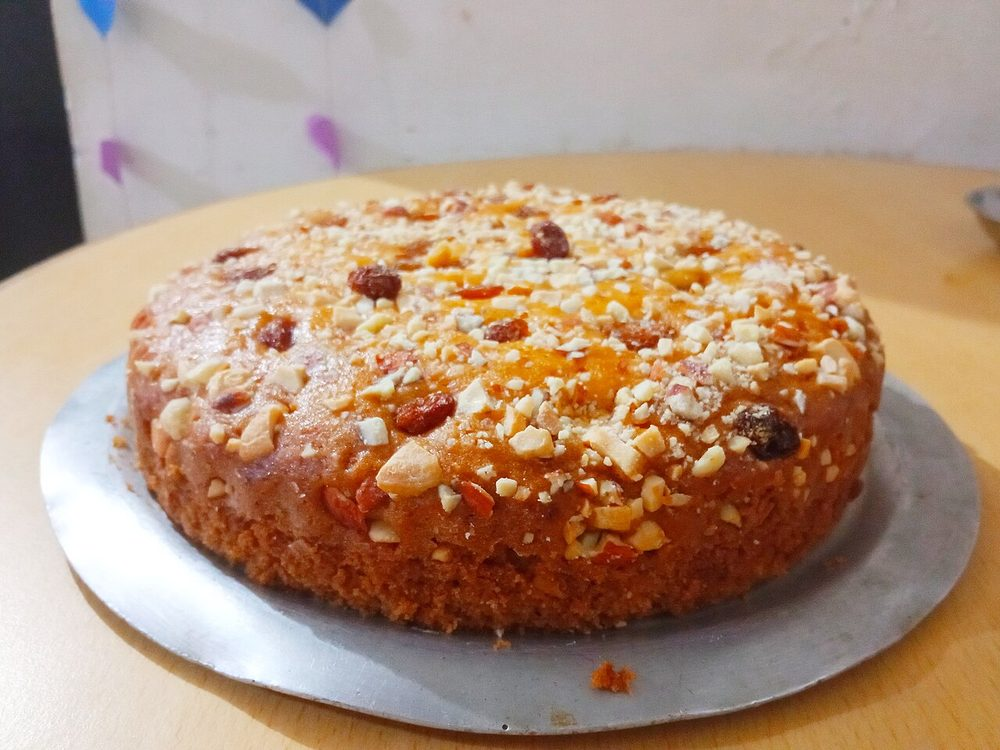

Contains: milk, gluten, egg, tree nuts
Checked against the ingredient list for ten allergens: milk, egg, fish, crustaceans, tree nuts, peanuts, sesame, mustard, soy and gluten. Brands vary, so read the label on anything new to you.
Ingredients
Quantities for 8.
- 200g, crumbled Khoyamawa; it is what makes this a mawa cake and not a sponge
- 200g Maida
- 150g, softened Butter
- 180g Sugar
- 3 Eggs
- 80ml Milk
- 10 pods, seeds ground Cardamomgenerous; the cake should smell of it across the room
- 1 tsp Baking Soda
- 2 tbsp, slivered Almondsoptional
Cookware
oven
Before you start
- Mawa cake is deliberately dense. If it comes out light and airy, something has gone wrong.
- Crumble the khoya finely and warm it slightly so it blends rather than sitting in lumps.
Method
- Cream the butter and sugar until pale, then beat in the crumbled khoya.
- Add the eggs one at a time, beating well between each.
- Fold in the flour, soda and ground cardamom, then loosen with the milk to a thick dropping consistency.Fold, do not beat. Beating at this stage is what makes it rise like a sponge, which is not what this is.
- Pour into a lined tin, scatter the almonds and bake at 170C for 40 minutes.
- Test with a skewer at the centre; a few moist crumbs are right, wet batter is not.
- Cool completely in the tin before cutting.
Safe temperatures: Egg dishes are done at 71°C / 160°F; a whole egg when the yolk and white are both firm. Reheat leftovers to 74°C / 165°F. FoodSafety.gov
Storage
Refrigerate it in an airtight tin, up to a week. Mawa is milk boiled down to a solid and there is egg in it besides, so the fridge is the default rather than the hot-weather exception. It is better on day two. Bring it back to room temperature before eating.
Nutrition Good estimate
Medium protein: 12 g a serving, 10% of the calories
| Per serving122 g | Per 100 g | |
|---|---|---|
| Calories | 488 kcal | 401 kcal |
| Protein | 12.5 g | 10 g |
| Carbohydrate | 52.6 g | 43 g |
| of which sugars | 32.9 g | 27 g |
| Fibre | 1.1 g | 1 g |
| Fat | 25.9 g | 21 g |
| of which saturated | 14.7 g | 12 g |
| of which unsaturated | 9.4 g | 8 g |
Ingredients given to taste count as zero, so the real figures run a little higher. Estimated from raw ingredients using USDA FoodData Central.
Times, yields, allergens and nutrition are guidance. Use your own judgement on doneness and on storing. More in About.